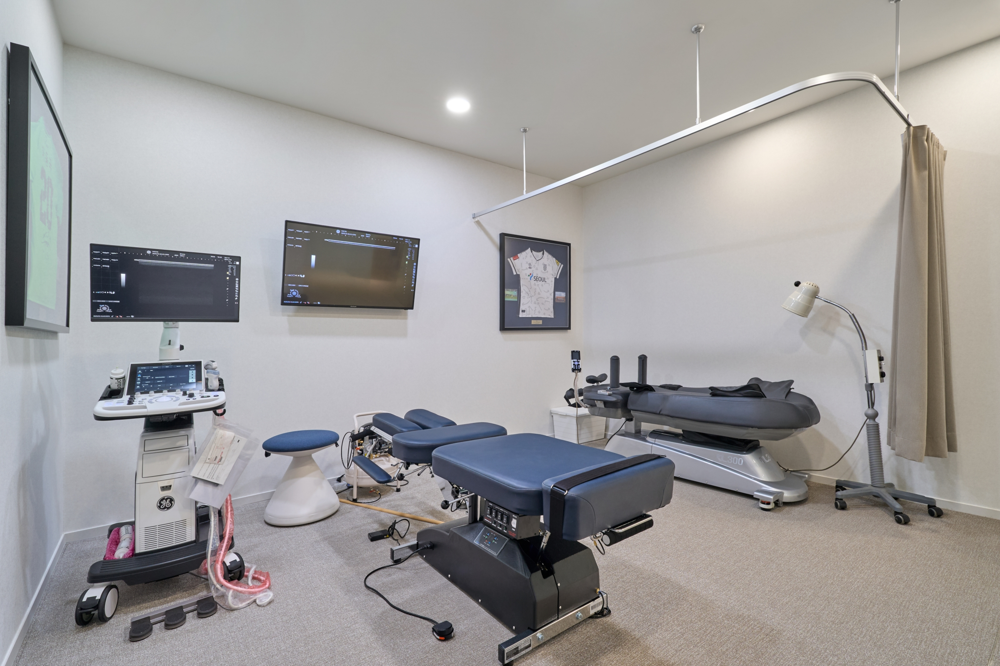
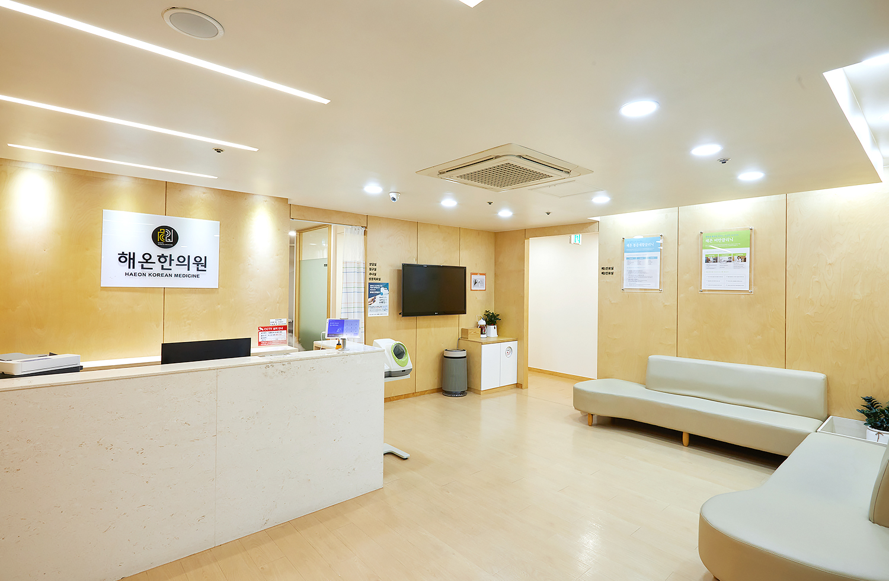

국내 최고 수준의 스포츠의학 의료진과 IT 플랫폼이 만나 유망주의 잠재력을 측정합니다.
유럽형 M(멘탈), P(피지컬), S(성장) 통합 분석 리포트.
실력이 떨어진 것이 아닙니다.
선수의 성장에 대한 데이터가 주는 확신이 없었기 때문입니다.
시합만 가면 주눅이 드나요? 막연한 성격 탓이 아닙니다. 회복 탄력성, 압박감 대처, 훈련 태도 등 보이지 않는 심리적 장벽을 정량화하여 맞춤형 가이드를 제공합니다.
예고 없는 부상은 없습니다. 자율신경계 분석으로 과훈련 증후군(OTS)을 예측하고, 정밀 초음파를 통해 무릎과 아킬레스건의 구조적 텐션을 측정합니다.
단순히 키가 작은 것이 아니라, 만기성장형일 수 있습니다. 골연령 검사로 예측 키(PAH)를 산출하고 급성장기 타이밍에 맞춘 과학적 부하를 설계합니다.
Global Standard
유럽은 2-3개월마다 성장기 선수에 대해
스포츠 과학&의학 평가 바탕으로
집중 관리합니다.
2-3개월 단위의 정밀 추적 관리
1회 검진 + 리포트 단독
3회 검진 + 리포트 & 모바일 앱 관리
프리미엄 집중 관리
진단 결과에 따른 집중 회복 및 케어 프로그램

서울 R&D 센터FIFA Diploma / 초음파 골연령 진단 특화 / 스포츠한의학 팀닥터

경기 남부유소년 엘리트 진료 / K-Medi 기반 팀닥터 / 스포츠한의학 팀닥터